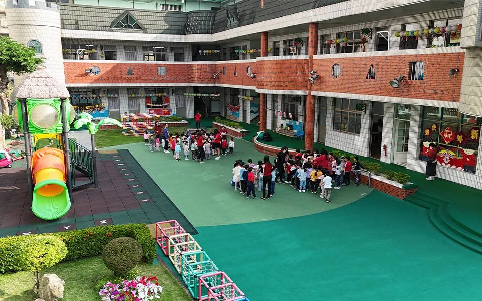
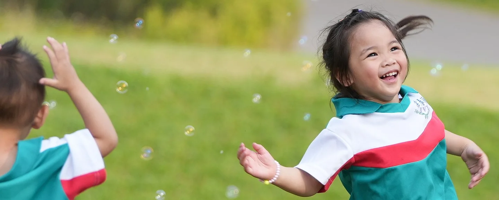

一聲早安，
故事開始。
和家人說聲再見，走進熟悉的校園。從整理小書包開始，一點一點，找到自己的步調。
每一天，都從被好好迎接開始。

孩子的一天

和家人說聲再見，走進熟悉的校園。從整理小書包開始，一點一點，找到自己的步調。

摸一摸、看一看，和同伴一起試試看。每一個「為什麼」，都是認識世界的開始。

洗洗手、準備用餐，也練習照顧自己。每天重複的小事情，都可以成為成長的練習。
把熱鬧的節奏放慢，留一點安靜給自己。休息之後，再帶著精神迎接下午。

看看植物、動動身體，發現身邊的新鮮事。和同伴一起玩的時候，也在練習分享與表達。

帶上書包，也帶上今天的新發現。和家人分享一件開心的小事，讓校園裡的故事繼續走進生活。
日常情境提案，以義華校影像呈現；各校、各班實際作息請向園所確認。
從初次入園的陪伴、探索活動與餐點安排，到休息需求、戶外活動和接送聯繫，都可以向想參觀的校區進一步了解。